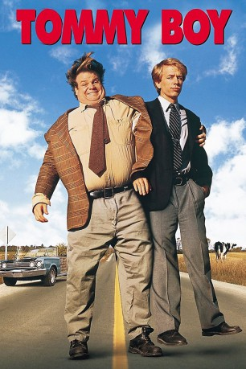

#6130 Tommy Boy - Durch dick und dünn
Alternativ: Tommy Boy
 
 IMDB-Wertung: 7.0 / 10
IMDB-Wertung: 7.0 / 10  Metascore: 0
Metascore: 0 
Nach sieben durchfeierten Jahren an der Marquette University kehrt Tommy in sein Heimatdorf in Ohio zurück. Hier hat ihm sein Vater einen guten Job verschafft. Als dieser jedoch an einem Herzanfall stirbt, scheint sich das einfache Leben von Tommy zu wenden und er muss selbst aktiv werden.
Jahr: 1995
Dauer: 97 Minuten
FSK:
Land: USA Studio: Paramount PicturesTonspuren: DD5.1 - ,
Untertitel: Englisch,
Auflösung: 1080p (1920x1080) Größe: 8407 MB
Genre: Komödie, Abenteuer
Regisseur:  Peter Segal
Peter Segal
Drehbuch: George Gipe
Soundtrack:
Darsteller:
- Chris Farley als Tommy
- David Spade als Richard
 Brian Dennehy als Big Tom
Brian Dennehy als Big Tom- Bo Derek als Beverly
 Dan Aykroyd als Zalinsky
Dan Aykroyd als Zalinsky- Julie Warner als Michelle
 Zach Grenier als Ted Reilly
Zach Grenier als Ted Reilly- Paul Greenberg als Skittish Student
 Michael Cram als Frat Boy
Michael Cram als Frat Boy- Trent McMullen als Frat Boy
 Dov Tiefenbach als Kid at Lake
Dov Tiefenbach als Kid at Lake- Robert K. Weiss als 'No' Manager
- David Huband als Gas Attendant
- Corey Sevier als Boy in Commercial
- Maria Vacratsis als Helen
- Lorri Bagley als Woman at Pool
- Adrian Truss als Cop
- Lindsay Leese als Reservationist
- Brian Kaulback als Bank Guard
 Jim Codrington als Security Guard
Jim Codrington als Security Guard John Farley als Roy , uncredited
John Farley als Roy , uncredited- Kevin P. Farley als Guy at Dad's Party , uncredited
 Rob Lowe als Paul Barish , uncredited
Rob Lowe als Paul Barish , uncredited- Sean McCann als Frank Rittenhauer
- James Blendick als Ron Gilmore
- Clinton Turnbull als Young Tommy
- Ryder Britton als Young Richard
- Graeme Millington als Frat Boy
- Dean Marshall als Frat Boy
 Philip Williams als Danny
Philip Williams als Danny- David 'Skippy' Malloy als Sammy
- Roy Lewis als Louis
- Austin Pool als Obnoxious Bus Kid
- William Dunlop als R.T.
- Jack Jessop als Priest
- Michael Dunston als Singer at Wedding
- David Hemblen als Archer
- George Kinamis als Kid at Lake
- Mark Zador als Kid at Lake
- Helen Hughes als Boardroom Lady
- J.R. Zimmerman als Boardroom Man
- Reg Dreger als 'No' Manager
- Lloyd White als 'No' Manager
- Hayley Gibbins als Little Girl at Carnival
- Julianne Gillies als Brady's Receptionist
- Addison Bell als Mr. Brady
- Colin Fox als Nelson
- Lynn Cunningham als Pretty Hitchhiker
- David Calderisi als 'Yes' Executive
- Sven Van de Ven als 'Yes' Executive
Datei: X:\1995\Tommy Boy - Durch dick und dünn (1995, FSK, 1920x1080).mkv seit 04.05.2017
Festplatte: HD 1992-1995
 Es gibt insgesamt 85 Filme in der Gruppe '1995'
Es gibt insgesamt 85 Filme in der Gruppe '1995'